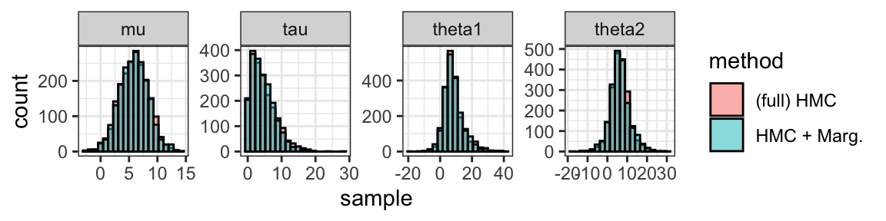
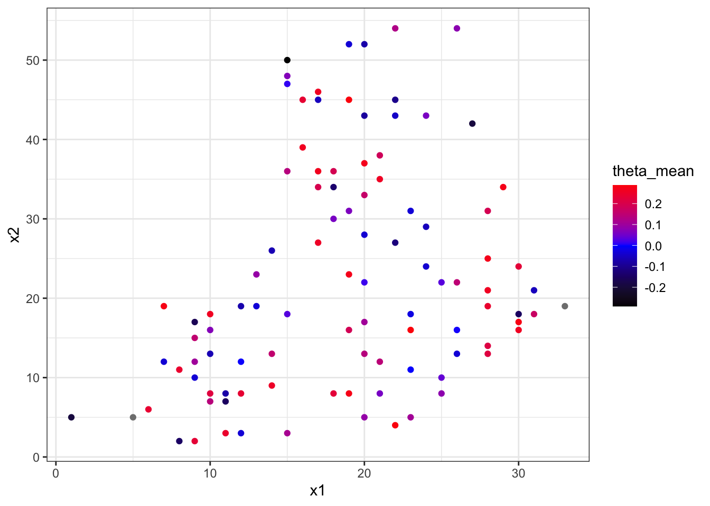
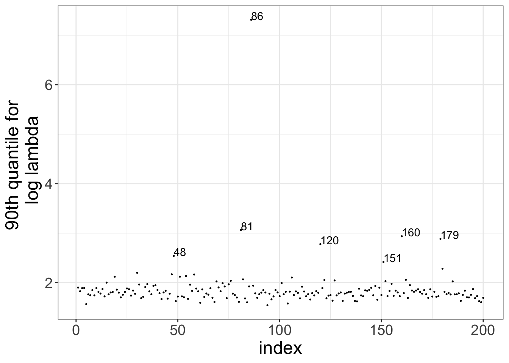
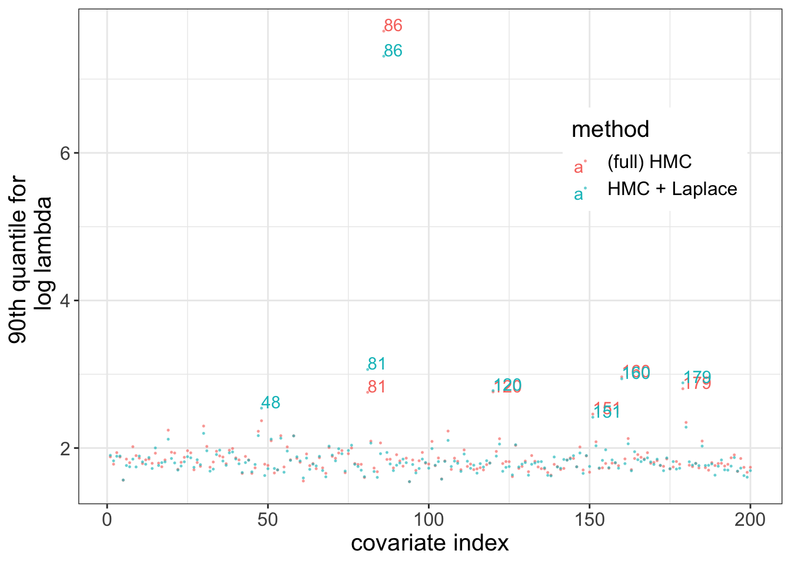
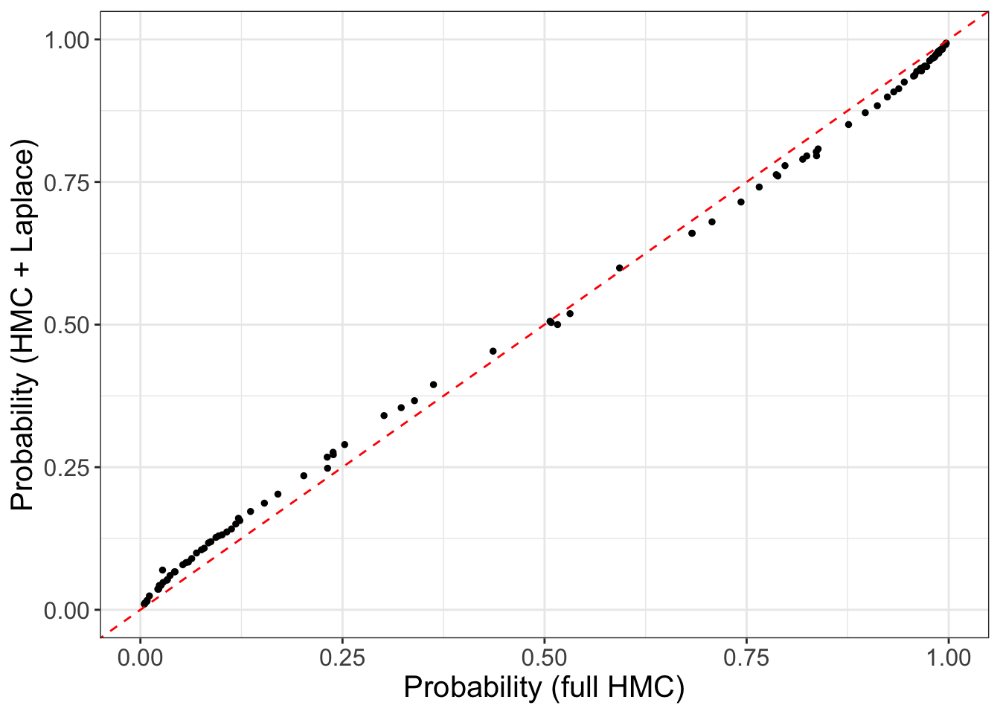

Approximate Bayesian inference for latent Gaussian models in Stan
Abstract
Latent Gaussian models are a common class of Bayesian hierarchical models, characterized by a normally distributed latent variable. These models often induce a posterior with a geometry that frustrates Bayesian inference algorithms, including Stan’s Hamiltonian Monte Carlo (HMC), resulting in slow and biased inference. To alleviate these difficulties, we can marginalize out the latent Gaussian variables and run inference on a marginal posterior. When exact marginalization is not possible, we can perform approximate marginalization using an embedded Laplace approximation. In this case study, I demonstrate how to use Stan’s embedded Laplace approximation on two Gaussian process examples: one application in spatial epidemiology and one in genetics.
\[ \text{v3.0 -- updated: July 2026} \]
This notebook builds closely on a 2022 case study written for a prototype embedded Laplace approximation.
1 Introduction
Latent Gaussian models are a class of hierarchical models defined by the following data generating process, \[\begin{equation} \begin{split} \phi, \eta & \sim p(\phi, \eta), \\ \theta & \sim \mathrm{MultiNormal}(0, K_\phi), \\ y & \sim p(y \mid \theta, \eta), \end{split} \tag{1} \end{equation}\] with
- \(y\): the observations,
- \(\theta\): the latent Gaussian variable,
- \(\phi\): hyperparameters for the prior covariance matrix, \(K\),
- \(\eta\): hyperparameters for the likelihood.
(To alleviate the notation, we’ll ignore the contribution of \(\eta\) for now and reintroduce it when relevant.)
Latent Gaussian models find a broad range of applications, including hierarchical models, sparse linear regression and Gaussian process models. Because of the normal prior on \(\theta\), they are subject to convenient manipulations that can improve Bayesian computation.
Markov chain Monte Carlo (MCMC) sampling can struggle with the geometry of the posterior \(p(\theta, \phi \mid y)\) because it can exhibit high-dimensional funnels and more generally non-finite curvature (Neal 2003; Betancourt and Girolami 2015). Much of the geometric grief we experience comes from the interaction between \(\phi\) and \(\theta\).
Rather than sample directly from the joint posterior \(p(\theta, \phi \mid y)\), we can instead target the marginal posterior \(p(\phi \mid y)\), which is often low-dimensional and has a better behaved geometry. To do so, we must integrate out \(\theta\) and compute the marginal likelihood, \[ p(y \mid \phi) = \int p(y \mid \theta, \phi) d \theta, \] and then perform standard inference on \(\phi\). If the likelihood \(p(y \mid \theta)\) is non-Gaussian, exact marginalization is usually not possible. Instead, we can use an embedded Laplace approximation and compute an approximate marginal distribution \(\hat p(y \mid \phi)\). This is a key idea in several packages, including INLA (Rue, Martino, and Chopin 2009; Rue et al. 2017), GPStuff (Vanhatalo et al. 2013) and TMB (Kristensen et al. 2016), and now a feature available in Stan as of version 2.39.
There are several reasons for using the embedded Laplace approximation in Stan. First, we can take advantage of Stan’s rich language when specifying models. Secondly, Stan boasts an efficient automatic differentiation library, and Stan’s embedded Laplace approximation itself uses a differentiation algorithm which is flexible and scales well with the dimension of \(\phi\) (Margossian et al. 2020; Margossian 2023). Finally, any one of Stan’s inference algorithms can be used to do inference on \(p(\phi \mid y)\), including Hamiltonian Monte Carlo, variational inference, and an even larger array of methods if using BridgeStan. On the other hand, Stan’s embedded Laplace approximation currently lacks support for sparse matrices, e.g., the prior covariance or prior precision matrix. In cases where sparsity is key to ensure reasonably efficient inference, the user should consider implementations of the embedded Laplace approximation in INLA and TMB.
1.1 Changes since v2.0 (2022)
- This notebook uses Stan’s released embedded Laplace approximation (v2.39.0), rather than a prototype. Furthermore, all models have been updated to match the syntax of Stan v2.39.0.
- This notebook is more concise and I’ve removed the pharmacokinetic example which was intriguing but not practical.
1.2 Changes since v1.0 (2020)
- The notebook begins with an example where exact marginalization is possible.
- The prior covariance function no longer needs to follow a strict signature and the Laplace routines now admit variadic arguments.
- Users can specify their own likelihood rather than choose from a menu of preset options.
- The notebook contains several new examples demonstrating how to write a custom likelihood.
2 Tools for Bayesian inference
Our goal is to characterize the joint posterior distribution \[ p(\theta, \phi, \eta \mid y). \] A tool of choice is Hamiltonian Monte Carlo (HMC), however there are known challenges when using HMC to fit multilevel models. Indeed, the interaction between \(\phi\) and \(\theta\) can lead to an intricate geometry, resulting in biased samples. We can often bypass these issues by reparameterizing the model and fine-tuning HMC. But this process is cumbersome, especially when working on computationally intensive models. Finding an acceptable parameterization and properly tuning HMC usually requires multiple fits, which becomes burdensome when each fit requires several hours.
Our geometric grief typically arises from the interaction between \(\theta\) and \(\phi\) (e.g., funnels). This motivates a strategy whereby we first marginalize out \(\theta\) and draw samples from the marginal posterior distribution \[\begin{eqnarray*} p(\phi, \eta \mid y) & \propto & p(\phi, \eta) p(y \mid \phi, \eta) \\ & \propto & p(\phi, \eta) \int p(y \mid \theta, \phi, \eta) \mathrm d \theta, \end{eqnarray*}\] with the expectation that \(p(\phi, \eta \mid y)\) has a better-behaved geometry.
Furthermore, we can obtain posterior samples for \(\theta\) via a two-step sampling procedure \[\begin{eqnarray*} \phi, \eta & \sim & \pi(\phi, \eta \mid y) \\ \theta & \sim & \pi(\theta \mid \phi,\eta, y). \end{eqnarray*}\] Together, these steps generate samples from the joint posterior distribution \(p(\phi, \eta, \theta \mid y)\).
Usually, we cannot calculate \(p(\phi \mid y)\) or \(p(\theta \mid \phi, y)\) explicitly. However, exploiting the fact \(\theta\) has a normal prior, we can sometimes obtain accurate approximations of these distributions using a Laplace approximation.
2.1 Exact Marginalization
To illustrate our inference strategy, we begin with an example where the
relevant conditional distributions are available analytically,
namely the 8 schools model.
The full model is
\[\begin{eqnarray*}
\phi = (\tau, \mu) & \sim & p(\tau) p(\mu), \\
\theta_i & \sim & \text{Normal}(\mu, \tau), \\
y_i & \sim & \text{Normal}(\theta_i, \sigma_i),
\end{eqnarray*}\]
where \(y_i\) and \(\sigma_i\) are observed.
Rather than run MCMC on the full space, we marginalize out \(\theta\) and
run MCMC on a collapsed space and sample from \(p(\mu, \tau \mid y, \sigma)\).
Doing the integration by hand,
\[\begin{equation*}
p(y_i \mid \tau, \mu, \sigma) = \text{Normal}\left(\mu, \sqrt{\tau^2 + \sigma^2_i}\right).
\end{equation*}\]
We then recover in generated quantities the posterior samples for \(\theta\)
by sampling from the conditional distribution
\[\begin{equation*}
p(\theta_i \mid y_i, \tau, \mu, \sigma) = \text{Normal} \left (\hat \theta_i, \hat \sigma_i \right),
\end{equation*}\]
where
\[\begin{equation*}
\hat \sigma_i^2 = \left ( \frac{1}{\tau^2} + \frac{1}{\sigma^2_i} \right)^{-1},
\end{equation*}\]
and
\[\begin{equation*}
\hat \theta_i = \left (\frac{\mu}{\tau^2} + \frac{y_i}{\sigma^2_i} \right) \hat \sigma_i^2.
\end{equation*}\]
This last result is obtained via an argument of conjugacy.
Samples from the joint posterior \(p(\theta, \eta, \phi \mid y, \sigma)\) are obtained using both the model and the generated quantities blocks.
model {
mu ~ normal(5, 3);
tau ~ normal(0, 10);
y ~ normal(mu, sqrt(square(tau) + square(sigma))); // p(y | mu, tau)
}
generated quantities {
real theta[n_schools];
for (i in 1:n_schools) {
real conjugate_variance = 1 / (1 / square(sigma[i]) + 1 / square(tau));
real conjugate_mean =
(y[i] / square(sigma[i]) + mu / square(tau)) * conjugate_variance;
theta[i] = normal_rng(conjugate_mean, sqrt(conjugate_variance));
} // p(theta | y, mu, tau)
}The full model is written in schools_marginal.stan.
n_schools <- 8
y <- c(28, 8, -3, 7, -1, 1, 18, 12)
sigma <- c(15, 10, 16, 11, 9, 11, 10, 18)
stan_data <- list(n_schools = n_schools, y = y, sigma = sigma)
# fit model with HMC + marginalization
mod_marginal <- cmdstan_model("model/schools_marginal.stan")
fit_marginal <- mod_marginal$sample(data = stan_data,
chains = num_chains,
parallel_chains = num_chains,
iter_warmup = num_warm,
iter_sampling = num_post,
seed = 123, refresh = 0)## Running MCMC with 4 parallel chains...
##
## Chain 1 finished in 0.0 seconds.
## Chain 2 finished in 0.0 seconds.
## Chain 3 finished in 0.0 seconds.
## Chain 4 finished in 0.0 seconds.
##
## All 4 chains finished successfully.
## Mean chain execution time: 0.0 seconds.
## Total execution time: 0.4 seconds.What have we gain from doing this? The main benefit is that MCMC now only explores the parameter space of \(\phi\), which is low-dimensional and geometrically well-behaved. This often leads to faster inference and in this case better mixing of the Markov chains.
As a benchmark we run HMC on the joint parameter space \((\mu, \tau, \theta)\). Using the standard centered parameterization results in a posterior with a multidimensional funnel between \(\theta\) and \(\tau\) and an unbounded curvature, which frustrates HMC and produces biased samples—fortunately, we can usually detect this problem via divergent transitions.
To obtain accurate inference, we need to use a non-centered parameterization, thereby removing the offending geometry induced by the interaction between \(\theta\) and \(\phi = (\mu, \tau)\): \[\begin{eqnarray*} \tau, \mu & \sim & \pi(\tau) \pi(\mu), \\ \zeta_i & \sim & \text{Normal}(0, 1), \\ \theta_i & = & \zeta_i \tau + \mu, \\ y_i & \sim & \text{Normal}(\theta_i, \sigma_i). \end{eqnarray*}\] The sampler is run over the joint space \((\tau, \mu, \zeta)\) and the \(\theta\)’s are recovered post-hoc.
mod_non_centered <- cmdstan_model("model/schools_non_centered.stan")
fit_non_centered <- mod_non_centered$sample(data = stan_data,
chains = num_chains,
parallel_chains = num_chains,
iter_warmup = num_warm,
iter_sampling = num_post,
seed = 123, refresh = 0)## Running MCMC with 4 parallel chains...
##
## Chain 1 finished in 0.0 seconds.
## Chain 2 finished in 0.0 seconds.
## Chain 3 finished in 0.1 seconds.
## Chain 4 finished in 0.1 seconds.
##
## All 4 chains finished successfully.
## Mean chain execution time: 0.0 seconds.
## Total execution time: 0.2 seconds.Let’s make sure the output of both inference strategies are in good agreement.
# Let's compare the outputs.
n <- num_chains * num_post
draws_full <- fit_non_centered$draws()
draws_marginal <- fit_marginal$draws()
n_parm <- 4
mu <- c(c(draws_marginal[, , 2]), c(draws_full[, , 2]))
tau <- c(c(draws_marginal[, , 3]), c(draws_full[, , 3]))
theta1 <- c(c(draws_marginal[, , 4]), c(draws_full[, , 12]))
theta2 <- c(c(draws_marginal[, , 5]), c(draws_full[, , 13]))
sample <- c(mu, tau, theta1, theta2)
method <- rep(rep(c("HMC + Marg.", "(full) HMC"), each = n), n_parm)
parameter <- rep(c("mu", "tau", "theta1", "theta2"), each = 2 * n)
post_data <- data.frame(sample, method, parameter)
plot_samples <- ggplot(data = post_data) +
geom_histogram(aes(x = sample, fill = method),
alpha = 0.5, color = "black",
bins = 20, position = "identity") +
facet_wrap(~parameter, nrow = 1, scale = "free") +
theme_bw()
plot_samples
As expected, the histograms exhibit a near-perfect overlap.
While the non-centered parameterization solves many problems encountered when fitting hierarchical models, it can be difficult to know without trial-and-error which parameterization to use. The problem is further complicated when we consider the possibility that different \(\theta_i\)’s may require different parameterization.
2.2 Approximate marginalization
Suppose now that the likelihood is not normal. For example it may be a Poisson with a log link function, \[\begin{equation} p(y_i \mid \theta, \phi) = \mathrm{Poisson}(\exp \theta_i). \end{equation}\] We no longer have an analytical expression for \(p(y \mid \phi, \eta)\) and \(p(\theta \mid \phi, \eta, y)\) and instead we rely on a Laplace approximation, \[ \hat p(\theta \mid \phi, y) \approx p(\theta \mid \phi, y). \]
Formally, the Laplace approximation is a second-order Taylor expansion of \(\log p(\theta \mid \phi, y)\) around the mode \(\theta^* = \text{argmax}_\theta \ p(\theta \mid \phi, y)\), \[ \log \hat p(\theta \mid \phi, y) = \log p(\theta^*|\phi, y) + \left (\nabla_\theta \log p(\theta|\phi, y) \large |_{\theta=\theta^*} \right)^T (\theta - \theta^*) + \frac{1}{2} (\theta-\theta^*)^T \frac{\partial^2 \log p(\theta|\phi, y)}{\partial \theta^2} {\large |_{\theta=\theta^*}} (\theta - \theta^*). \] I’ll now argue that this Taylor expansion defines a normal approximation. In the above expression, the first term can be ignored, because it is constant with respect to \(\theta\), and the second term vanishes, because the gradient is null at the mode. We are therefore left with the third and quadratic term, which corresponds to the logarithm of an unormalized normal density centered at \(\theta^*\) and with a covariance whose inverse matches the negative Hessian of \(\log p(\theta|\phi, y)\). (In other words, the approximating normal matches the mode and the curvature of \(\log p(\theta|\phi, y)\) at the mode.)
Finding the mode is an optimization problem, which we solve using a Newton solver. The covariance matrix is then obtained from the Hessian of \(\log p(\theta \mid \phi, y)\).
Next, we obtain an approximation of the marginal likelihood via, \[ \hat p(\phi \mid y) := p(\phi) \frac{p(\theta^* \mid \phi) p(y \mid \theta^*)}{\hat p(\theta^* \mid \phi, y)} \approx p(\phi \mid y), \] where the approximate equality on the right is exact if we replace \(\hat p(\theta^* \mid \phi, y)\) with \(p(\theta \mid \phi, y)\). (Note: this result is true if we plug in any value of \(\theta\) in the above density rather than \(\theta^*\) but the convention is to use \(\theta^*\).) Equipped with this approximation, we can repeat the two-stage sampling scheme we used when exact marginalization was possible.
But we now need to worry about the error this approximation introduces. When the observational distribution is log-concave, \(p(\theta \mid \phi, y)\) is guaranteed to be unimodal. Examples of densities that are log-concave include the Poisson, binomial, and negative binomial densities, and here the Laplace approximation is understood to be very accurate. The Bernoulli distribution is also log-concave but the Laplace approximation introduces a small but observable bias. Detailed analysis of the error can be found in references (e.g. Kuss and Rasmussen (2005); Vanhatalo, Pietiläinen, and Vehtari (2010); Cseke and Heskes (2011); Vehtari et al. (2016)). Evaluating the accuracy of the approximation for less traditional densities constitutes a challenging and important avenue for future research.
3 Stan code
To enable the above scheme, we can use Stan’s suite of functions for the embedded Laplace approximation. In particular, we’ll use:
laplace_marginal, which returns \(\log \hat p(y \mid \phi, \eta)\).laplace_latent_rng, which samples \(\theta\) from \(\hat p(\theta \mid \phi, \eta, y)\).
A call to laplace_marginal in the model block looks as follows,
target += laplace_marginal(likelihood_function, (...), hessian_block_size,
covariance_function, (...));The arguments are:
likelihood_function: a user-defined function which returns \(\log p(y \mid \theta, \eta)\).(...): a tuple which contains arguments to be passed to the likelihood function, including \(y\) and \(\eta\) but excluding \(\theta\).hessian_block_size: the block size of the Hessian matrix, \(\partial^2 \log p(y \mid \theta, \eta) / \partial \theta^2\), assuming the Hessian is block diagonal. (In the absence of any sparsity structure, the block size is the size of \(\theta\).)covariance_function: a user-defined function which returns prior covariance function \(K_\phi\).(...): a tuple with arguments to be passed to \(K_\phi\), including \(\phi\).
The laplace_latent_rng functions take in the same arguments and returns a vector.
Let’s briefly discuss the Hessian of the log likelihood and why Stan insists that users treat it as a block-diagonal matrix (without loss of generality, since in the absence of any structure, the Hessian can be treated as being one single block).
For many problems, the Hessian is block-diagonal and taking advantage of this structure considerably speeds up calculations of the Laplace approximation. To see how this structure might arise, let’s first assume that the observations \(y_i\) are conditionally independent. That is, \[ \log p(y \mid \theta, \eta) = \sum_{i} \log p(y_i \mid \theta, \eta). \] If in addition each \(y_i\) only depends on a unique subset of \(\theta\), then the Hessian of \(\log p(y \mid \theta, \eta)\) will be sparse. For example, suppose that each \(y_i\) only depends on a unique \(\theta_i\), i.e., for each observation \(y_i\) we have a corresponding latent variable \(\theta_i\), then \[ \log p(y \mid \theta, \eta) = \sum_{i} \log p(y_i \mid \theta_i, \eta), \] and the Hessian of the log-likelihood with respect to \(\theta\) is diagonal. To see this, we simply note that for any off-diagonal element, i.e., \(i\neq j\), \[ \frac{\partial^2}{\partial \theta_j \theta_i} \log p(y \mid \theta, \eta) = \sum_i \frac{\partial^2}{\partial \theta_j \theta_i} \log p(y_i \mid \theta_i, \eta) = 0. \]
In this case, we would specify hessian_block_size = 1.
WARNING: Calculating the Hessian and more generally higher-order derivatives is supported for most but not all functions in Stan, which constraints which likelihood \(p(y \mid \theta, \eta)\) the user can specify. In particular, higher-order derivatives are not supported for higher-order functions such as numerical solvers for differential and algebraic equations.
4 Disease map of Finland
The disease map of Finland by Vanhatalo, Pietiläinen, and Vehtari (2010) models the mortality count due to alcoholism across the country. The data is aggregated into \(n = 911\) counties. To make the computation lighter, we use \(n_\mathrm{obs} = 100\) randomly sampled counties. As data we have \(x\), the spatial coordinate of each county, \(y\), the count of deaths and \(y_e\), the standardized expected number of deaths.
The observational distribution is, \[ p(y \mid \theta) = \text{Poisson}(\exp(\theta_i + \log y_{e,i})). \]
4.1 Building the model
We start with the data block:
data {
int n_obs; // number of counties
int n_coordinates; // number of spatial coordinates
array[n_obs] int y; // death counts in each county
vector[n_obs] ye; // expected number of deaths
array[n_obs] vector[n_coordinates] x; // coordinates for each country
}In the transformed data block, we make some convenient calculations and
specify the Hessian block size of the log likelihood—in this case, the
Hessian is diagonal and so the block size is 1.
The disease is modeled using a Gaussian process and for each county we assign a latent realization of the process, \(\theta_i\). The Gaussian process itself is governed by a squared exponential kernel, with two hyper parameters: \(\alpha\), the marginal standard deviation, and \(\rho\), the length scale. Our plan is to marginalize \(\theta\) out, so we only sample \(\alpha\) and \(\rho\) with HMC.
In the functions block, we specify the (log) likelihood function and the prior covariance function.
real likelihood_function (vector theta, vector log_ye, array[] int y) {
int n = num_elements(theta);
vector[n] alpha = log_ye + theta;
return sum(to_vector(y) .* alpha - exp(alpha));
}
matrix cov_function (array[] vector x, int n_obs, real alpha, real rho) {
matrix[n_obs, n_obs] K = gp_exp_quad_cov(x, alpha, rho);
return add_diag(K, 1e-8);
}For the log likelihood function, we have explicitly calculated the log probability mass function of a Poisson with a log link up to a constant with respect to \(\theta\). This constant can be ignored when solving the optimization problem that underlies the Laplace approximation since it doesn’t affect the mode of \(p(\theta \mid y, \phi)\). Another option is to use Stan’s built-in lpmf function,
real likelihood_function (vector theta, vector log_ye, array[] int y) {
int n = num_elements(theta);
vector[n] alpha = log_ye + theta;
return poisson_log_lpmf(y | alpha);
}This approach is more straightforward but poisson_log_lpmf makes
unnecessary and ultimately expensive calculations of certain constants.
Later in this report, we will look at yet another option, which is to use a specialized call of the embedded Laplace approximation for a Poisson likelihood.
In the model block, we specify our priors on \(\alpha\) and \(\rho\), which will be inverse-Gamma, and we increment the target density with the approximate marginal density, \(\log \hat p(y \mid \alpha, \rho)\).
model {
rho ~ inv_gamma(2.4, 14.8);
alpha ~ inv_gamma(10, 10);
target += laplace_marginal(likelihood_function, (log_ye, y),
hessian_block_size,
cov_function, (x, n_obs, alpha, rho));
}Finally, we generate posterior samples for \(\theta\) post-hoc.
generated quantities {
vector[n_obs] theta
= laplace_latent_rng(likelihood_function, (log_ye, y),
hessian_block_size,
cov_function, (x, n_obs, alpha, rho));
}The full Stan model can be found in model/disease_map_ela.stan.
4.2 Fitting the model with HMC
# Read in data for 100 randomly sampled counties
data <- rjson::fromJSON(file = "data/disease_100.json")
# Compile and fit the model with CmdStanR
mod <- cmdstan_model("model/disease_map_ela.stan")
num_chains <- 4
fit <- mod$sample(data = data, chains = num_chains,
parallel_chains = num_chains,
iter_warmup = 500, iter_sampling = 500, seed = 123,
refresh = 0)## Running MCMC with 4 parallel chains...## Chain 3 [laplace_marginal_density] WARNING: solver fallback
## Chain 3 iteration: 0
## Chain 3 failed: solver 1 (Diagonal Hessian-root Cholesky)
## Chain 3 reason: laplace_marginal_density: Cholesky failed after adding jitter up to 0.000100
## Chain 3 action: trying solver 2 (Covariance-root Cholesky)
## Chain 3 note: this warning message will only be displayed once.## Chain 4 [laplace_marginal_density] WARNING: solver fallback
## Chain 4 iteration: 0
## Chain 4 failed: solver 1 (Diagonal Hessian-root Cholesky)
## Chain 4 reason: laplace_marginal_density: Cholesky failed after adding jitter up to 0.000100
## Chain 4 action: trying solver 2 (Covariance-root Cholesky)
## Chain 4 note: this warning message will only be displayed once.
## Chain 3 finished in 12.5 seconds.
## Chain 4 finished in 13.4 seconds.
## Chain 1 finished in 13.5 seconds.
## Chain 2 finished in 13.7 seconds.
##
## All 4 chains finished successfully.
## Mean chain execution time: 13.3 seconds.
## Total execution time: 13.9 seconds.The fit runs without any concerning messages being displayed. (We may get some warning messages about numerical instability during the early warmup but these errors are not concerning, as long as they do not persist during the sampling phase.)
Let’s examine a summary of our fit for certain parameters of interest.
## # A tibble: 5 × 10
## variable mean median sd mad q5 q95 rhat ess_bulk
## <chr> <dbl> <dbl> <dbl> <dbl> <dbl> <dbl> <dbl> <dbl>
## 1 lp__ 36622. 36623. 1.15 0.900 3.66e+4 3.66e+4 1.00 713.
## 2 alpha 0.726 0.690 0.210 0.196 4.52e-1 1.11e+0 1.01 820.
## 3 rho 20.8 17.8 12.3 6.28 1.01e+1 4.19e+1 1.00 885.
## 4 theta[1] -0.0922 -0.0916 0.0245 0.0238 -1.31e-1 -5.32e-2 1.00 1825.
## 5 theta[2] 0.221 0.221 0.0787 0.0714 9.24e-2 3.54e-1 1.000 1812.
## # ℹ 1 more variable: ess_tail <dbl>For the examined parameters, \(\hat R < 1.01\), and the effective sample sizes
(ess_bulk and ess_tail) are large. We may do further checks, such as
examine the trace and density plots.
These standard MCMC checks indicate the sampler works well when targetting the approximate posterior \(\hat p(\phi, \theta \mid y)\) but they do not guarantee that the Laplace approximation itself is accurate. However, when using a Poisson likelihood, it is well understood that the embedded Laplace approximation is accurate.
There are several ways to inspect the fitted model and for a more detailed analysis, we refer the reader to Vanhatalo, Pietiläinen, and Vehtari (2010). In this notebook, we simply plot the mean Poisson log parameter, \(\theta\), for each county.
theta_mean <- fit$summary()[6:105, 2]$mean
x_mat <- t(matrix(unlist(data$x), nrow = 2))
plot_data <- data.frame(x1 = x_mat[, 1],
x2 = x_mat[, 2],
theta_mean = theta_mean)
plot <- ggplot(data = plot_data,
aes(x = x1, y = x2, color = theta_mean)) +
geom_point() + theme_bw() +
scale_color_gradient2(low = "black", mid = "blue", high = "red")
plot
This plot highlights regions which, per our analysis, are more at risk. There are several limitations worth pointing out. First we only used 100 counties, so the resolution is limited. (Can you tell that the above is a map of Finland?). It is of course possible to run the analysis on all 911 counties and get more fine-grained results. Secondly, this plot does not capture the posterior variance of our estimates. Including this information in a map is tricky, but strategies exist (e.g. use multiple maps).
4.3 Embedded Laplace approximation with a built-in likelihood
Stan also provides a call to the embedded Laplace approximation with a pre-specified likelihood function. When the likelihood is a Poisson with a log link, we can use the following code:
transformed data {
// ...
// variables for built-in likelihood
array[n_obs] int y_index = linspaced_int_array(n_obs, 1, n_obs);
}
// ...
model {
// ...
// alternative using built-in function
y ~ laplace_marginal_poisson_log(y_index, log_ye, hessian_block_size,
cov_function, (x, n_obs, alpha, rho));
}
generated quantities {
// alternative using built-in function
vector[n_obs] theta
= laplace_latent_poisson_log_rng(y, y_index, log_ye, hessian_block_size,
cov_function, (x, n_obs, alpha, rho));
}(When calling laplace_marginal_poisson_log, the user no longer needs to
specify the likelihood function.)
Currently, Stan provides limited support for built-in likelihoods, namely the Poisson with a log link, the negative Binomial with a log link and the Bernoulli with a logit link. In the future, more convenience functions may be added and when needed, users can always specify their own likelihood.
5 Sparse kernel interaction model
In this next example, we examine a prostate cancer classification data set2. The goal of the study is to identify predictors for the development of prostate cancer. For each patient, \(d \approx 6,000\) covariates are measured, and a binary variable indicates whether or not the patient develops cancer. The data set contains observations over \(n = 102\) patients.
5.1 Building the model
As a predictive model, we use a general linear regression model with a Bernoulli likelihood and a logit link. Let \(y\) be the observations, \(X\) the design matrix, \(\beta\) the regression coefficients, and \(\beta_0\) the intercept term. Then
\[ y \sim \mathrm{Bernoulli \left( \mathrm{logit}^{-1}(\beta_0 + X \beta) \right)}. \]
Even though \(d\) is large, we believe only a small fraction of the covariates are relevant. To reflect this belief, we construct a regularized horseshoe prior (Piironen and Vehtari 2017). This prior operates a soft selection, shrinking most coefficients \(\beta_i\) to 0, except for a few coefficients, which are left unregularized and whose corresponding variables are “selected”. A local scale parameter \(\lambda_j\) controls the shrinkage of \(\beta_j\) (to be precise, a transformation of \(\lambda_j\) acts as the regularizer; we denote this transformation \(\tilde \lambda_j\)). There is also a global scale parameter \(\tau\) which regularizes unshrunk \(\beta\)s and operates a soft truncation of the extreme tails. For details, we refer the reader to Piironen and Vehtari (2017).
If we extend the above model to account for pairwise interactions between the covariates, we obtain a sparse kernel interaction model (SKIM) (Agrawal et al. 2019). The priors on the coefficient are then the following: \[\begin{eqnarray*} \eta, \tilde \lambda, \tau, c_0 & \sim & p(\eta) p(\tilde \lambda) p(\tau) p(c_0), \\ \beta_i & \sim & \mathrm{Normal}(0, \tau^2 \tilde \lambda_i^2), \\ \beta_{ij} & \sim & \mathrm{Normal}(0, \eta^2_2 \tilde \lambda_i^2 \tilde \lambda_j^2), \\ \beta_0 & \sim & \mathrm{Normal}(0, c_0^2), \end{eqnarray*}\] where \(\eta_2\) regulates interaction terms and \(c_0\) the intercept.
With a large number of coefficients and an exponentially large number of interaction terms, this becomes a formidable model to fit! To improve computation, Agrawal et al. (2019) propose a “kernel trick”, whereby we recast the model as a Gaussian process. Let \(\phi\) denote the hyperparameters. Then \[\begin{eqnarray*} \phi & \sim & p(\phi), \\ \theta & \sim & \mathrm{MultiNormal}(0, K_\phi), \\ y_i & \sim & \mathrm{Bernoulli(logit}^{-1} f_i)). \end{eqnarray*}\]
This time, the covariance matrix is rather intricate. We first compute intermediate values: \[\begin{eqnarray*} K_1 & = & X \ \mathrm{diag}(\tilde{\lambda}^2) \ X^T, \\ K_2 & = & [X \circ X] \ \mathrm{diag}(\tilde{\lambda}^2) \ [X \circ X]^T, \end{eqnarray*}\] where “\(\circ\)” denotes the element-wise Hadamard product. Then \[\begin{eqnarray*} K & = & \frac{1}{2} \eta_2^2 (K_1 + 1) \circ (K_1 + 1) - \frac{1}{2} \eta_2^2 K_2 - (\tau^2 - \eta_2^2) K_1 + c_0^2 - \frac{1}{2} \eta_2^2. \end{eqnarray*}\] For more details, see Agrawal et al. (2019) and Appendix E.3 of Margossian et al. (2020).
Since this is a latent Gaussian model, we can use the embedded Laplace approximation to marginalize out \(f\), just as we have done in the previous example.
The key steps lie in the functions block where we define a function which
returns the log likelihood and a function which returns the prior covariance
function.
functions {
real likelihood_function (vector theta, array[] int y, int x_dummy) {
return bernoulli_logit_lpmf(y | theta);
}
matrix covariance_function (vector kappa_squared,
real eta_one,
real eta_two,
matrix x,
matrix x2,
int n,
int d,
real scale_icept) {
matrix[n, n] K1 = diag_post_multiply(x, kappa_squared) * x';
matrix[n, n] K2 = diag_post_multiply(x2, kappa_squared) * x2';
matrix[n, n] K = 0.5 * square(eta_two) * square(K1 + 1) -
0.5 * square(eta_two) * K2 +
(square(eta_one) - square(eta_two)) * K1 +
square(scale_icept) - 0.5 * square(eta_two);
// add jitter
return add_diag(K, 1e-5);;
}
}Then, we call functions for the embedded Laplace approximation in the model and generated quantities blocks.
model {
// ...
target += laplace_marginal(likelihood_function, (y, 0), hessian_block_size,
covariance_function,
(kappa_squared, eta_one, eta_two, x, x2, n, d, scale_icept));
}
generated quantities {
vector[n] theta = laplace_latent_rng(likelihood_function, (y, 0),
hessian_block_size, covariance_function,
(kappa_squared, eta_one, eta_two, x, x2, n, d, scale_icept));
// ...
}The full Stan code can be found in model/skim_logit_ela.stan.
Fitting the model in R
For this case study, we restrict our attention to only 200 covariates in order to obtain reasonably fast fits.
To identify covariates which are softly selected, we examine the \(90^\mathrm{th}\) quantile of \(\log \lambda\). Estimates of extreme quantiles tend to have a large variance, hence it is helpful to run a large number of samples.
# since we're estimating extreme quantiles, increase number of samples.
num_post = 2000
# mod <- cmdstan_model("model/skim_logit_ela.stan")
# fit_laplace <- mod$sample(
# data = data, chains = num_chains,
# parallel_chains = num_chains,
# iter_warmup = num_warm,
# iter_sampling = num_post, seed = 123)
#
# fit_laplace$save_object("saved_fits/skim_logit_ela.fit.RDS")
# For convenience, read in saved fit rather than run model
fit_laplace <- readRDS("saved_fits/skim_logit_ela.fit.RDS")As before, we examine a summary of the posterior draws for certain parameters of interest.
## # A tibble: 5 × 10
## variable mean median sd mad q5 q95 rhat ess_bulk
## <chr> <dbl> <dbl> <dbl> <dbl> <dbl> <dbl> <dbl> <dbl>
## 1 lp__ -416. -4.16e+2 1.27e+1 1.27e+1 -4.38e+2 -3.96e+2 1.00 2469.
## 2 eta_two 0.00107 3.66e-4 2.43e-3 4.48e-4 2.07e-5 4.04e-3 1.000 5624.
## 3 tau 4.83 3.68e+0 4.12e+0 2.77e+0 8.61e-1 1.25e+1 1.00 5602.
## 4 lambda[1] 6.05 9.94e-1 5.52e+1 1.11e+0 7.26e-2 1.40e+1 1.00 11974.
## 5 lambda[2] 10.3 9.75e-1 2.88e+2 1.06e+0 7.08e-2 1.25e+1 1.00 10124.
## # ℹ 1 more variable: ess_tail <dbl>To identify softly selected variables, we load two custom R functions
from the script tools.r which compute the 90th posterior quantile of
\(\log \lambda\) and plots the results for each covariate.
source("tools.r")
# plot the 90th quantiles of all covariates.
quant = 0.9
lambda <- fit_laplace$draws(variables = "lambda")
lambda <- matrix(lambda, nrow = num_chains * num_post,
ncol = 200)
log_lambda_laplace <- log(lambda)
quant_select_plot(log_lambda_laplace, quant, threshold = 2.4) +
ylab("90th quantile for \n log lambda")
From this plot, it is clear that the \(86^\mathrm{th}\) covariate is strongly selected, with some other covariates having some mild predictive capacities.
## [1] 86 81 160 179 120 485.2 Comparison to inference on the exact model
The embedded Laplace approximation is known to be highly accurate when the the latent Gaussian model has a Poisson likelihood, as in the disease map example we studied in the previous section. By contrast, the embedded Laplace approximation may introduce a non-negligible bias when the model has a Bernoulli likelihood. To study this bias, we fit SKIM without marginalizing \(\theta\) out and examine whether our downstream scientific conclusions change. In particular, we look at variable selection and probability that a patient develops cancer.
Fitting the model with only HMC requires a non-centered parameterization
and increasing the sampler’s target acceptance rate adapt_delta to 0.99 in
order to remove divergent transitions.
The Stan model can be found in model/skim_logit.stan.
# mod <- cmdstan_model("model/skim_logit.stan")
# fit_full <- mod$sample(
# data = data, chains = num_chains,
# parallel_chains = num_chains,
# iter_warmup = num_warm,
# iter_sampling = num_post, seed = 123,
# adapt_delta = 0.99)
#
# fit_full$save_object("saved_fits/skim_logit.fit.RDS")
# WARNING: Even with adapt_delta = 0.95, we get 12 of 8000 divergent transitions.
# load saved cmdstanr fit
fit_full <- readRDS("saved_fits/skim_logit.fit.RDS")As before, we inspect the \(90^\mathrm{th}\) quantile of \(\log \lambda\) to see which variables get softly selected.
# log_lambda_full <- log(extract(fit_full, pars = c("lambda"))$lambda)
lambda_full <- fit_full$draws(variables = "lambda")
lambda_full <- matrix(lambda_full, nrow = num_chains * num_post,
ncol = 200)
log_lambda_full <- log(lambda_full)
quant_select_plot2(log_lambda_full, log_lambda_laplace, quant,
threshold = 2.4, alpha = 0.5) +
ylab("90th quantile for \n log lambda")## Warning: A numeric `legend.position` argument in `theme()` was deprecated in ggplot2
## 3.5.0.
## ℹ Please use the `legend.position.inside` argument of `theme()` instead.
## This warning is displayed once per session.
## Call `lifecycle::last_lifecycle_warnings()` to see where this warning was
## generated.
# select the top 6 covariates from the model fitted with full HMC
select_lambda(log_lambda_full, quant, n = 6)## [1] 86 160 179 120 81 151# select the top 6 covariates from the approximate model
select_lambda(log_lambda_laplace, quant, n = 6)## [1] 86 81 160 179 120 48Despite slight variations, the models are overall in good agreement.
We also compare the expected probability of developing cancer.
n_patients <- data$n
p_laplace <- matrix(fit_laplace$draws(variables = "p"),
nrow = num_chains * num_post, ncol = n_patients)
p_laplace <- colMeans(p_laplace)
p_full <- matrix(fit_full$draws(variables = "p"),
nrow = num_chains * num_post, ncol = n_patients)
p_full <- colMeans(p_full)
plot_data <- data.frame(p_full, p_laplace)
plot <- ggplot(data = plot_data, aes(x = p_full, y = p_laplace)) +
geom_point(size = 1) + theme_bw() +
geom_abline(intercept = 0, slope = 1,
color = "red",
linetype = "dashed", size = 0.5) +
xlim(0, 1) + ylim(0, 1) + xlab("Probability (full HMC)") +
ylab("Probability (HMC + Laplace)") +
theme(text = element_text(size = 15))## Warning: Using `size` aesthetic for lines was deprecated in ggplot2 3.4.0.
## ℹ Please use `linewidth` instead.
## This warning is displayed once per session.
## Call `lifecycle::last_lifecycle_warnings()` to see where this warning was
## generated.
The model with an embedded Laplace approximation produces more conservative probabilities (i.e., regressed towards 0.5).
Finally, we make a high-level comparison of runtimes. In this example and for the chosen chain length, using an embedded Laplace approximation considerably reduces runtimes. A more careful analysis of the error reveals that the embedded Laplace approximation introduces an asymptotic bias for certain parameters, and so the speed-up should be interpreted in that context; see Margossian et al. (2020) for a more detailed discussion.
## $total
## [1] 430.8532
##
## $chains
## chain_id warmup sampling total
## 1 1 119.334 256.557 375.891
## 2 2 156.182 252.059 408.241
## 3 3 120.888 257.197 378.085
## 4 4 154.749 253.866 408.615## $total
## [1] 2756.014
##
## $chains
## chain_id warmup sampling total
## 1 1 1469.20 1233.09 2702.28
## 2 2 1532.73 1222.87 2755.60
## 3 3 1478.01 1230.82 2708.82
## 4 4 1372.40 1236.14 2608.55Discussion
With Stan’s latest release (v2.39.0 as of the writing of this case study), it is now possible to write a Stan model with an embedded Laplace approximation and couple it with HMC or any inference algorithm supported by Stan. Approximate marginalization produces a collapsed posterior with often times a greatly simplified geometry, leading to faster inference. However, in some cases, the Laplace approximation—which must be evaluated at each iteration—can be costly and the bias introduced by the approximation non-negligible. How exactly these trade-offs resolve depends on the application.
In this notebook, I presented two Gaussian process applications where the embedded Laplace approximation is fast and accurate—at least in terms of downstream scientific applications, e.g., variable selection and prediction. Future case studies will further characterize the benefits and challenges of using the embedded Laplace approximation in Stan and discuss how to check the accuracy of the approximation.
References
References
Department of Statistics, University of British Columbia↩︎
Available on http://featureselection.asu.edu/datasets.php.↩︎